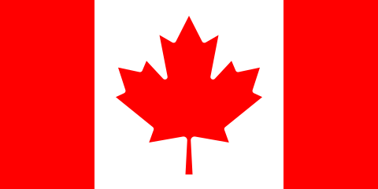
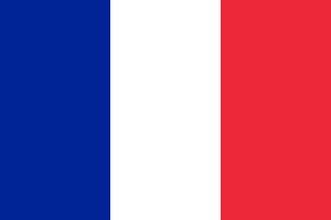
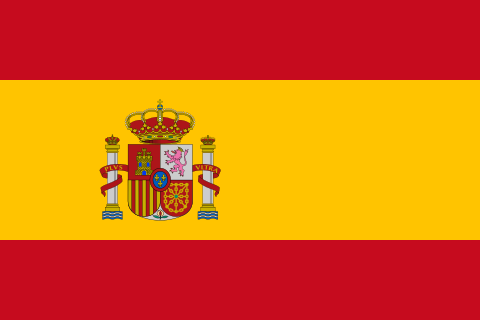

|
Număr
|
Acronim |
Agenție |
Sediu |
Președinte |
Înființare |
| 1 |
OMPI |
Organizația Internațională a Proprietății Intelectuale |
 Geneva, Elveția Geneva, Elveția |
Francis Gurry |
1974 |
| 2 |
IAEA |
Agenția Internațională pentru Energie Atomică |
Viena, Austria |
Yukiya Amano |
1957 |
| 3 |
OACI |
Organizația Aviației Civile Internaționale |
Montreal, >Canada |
Raymond Benjamin |
1947 |
| 4 |
FIDA |
Fondul Internațional pentru Dezvoltarea Agricolă |
 Roma, Italia Roma, Italia |
Kanayo F. Nwanze |
1977 |
| 5 |
OIM |
Organizația Internațională a Muncii |
Geneva, Elveția |
Guy Ryder |
1946 (1919) |
| 6 |
OMI |
Organizația Maritimă Internațională |
Londra, Marea Britanie |
Koji Sekimizu |
1948 |
| 7 |
FMI |
Fondul Monetar Internațional |
 Washington, D.C., SUA Washington, D.C., SUA |
Christine Lagarde |
1945 (1944) |
| 8 |
UIT |
Organizația Internațională a Telecomunicațiilor |
Geneva, Elveția |
Mali Hamadoun Touré |
1947 (1865) |
| 9 |
UNESCO |
Organizația Națiunilor Unite pentru Educație, Știință și Cultură |
Paris, Franța |
Irina Bokova |
1946 |
| 10 |
ONUDI |
Organizația Națiunilor Unite pentru Dezvoltare Industrială Austria |
Viena, Austria |
Li Yong (politician) |
1967 |
| 11 |
UNWTO |
Organizația Internațională pentru Turism |
Madrid, Spania |
Taleb Rifai |
1974 |
| 12 |
UPU |
Uniunea Poștală Universală |
Berna, Elveția |
Bishar Abdirahman Hussein |
1947 (1874) |
| 13 |
WBG |
Banca Mondială |
Washington, D.C., SUA |
Jim Yong Kim |
1945 (1944) |
| 14 |
PAM |
Programul Alimentar Mondial |
 Roma, Italia Roma, Italia |
Ertharin Cousin |
1963 |
| 15 |
OMS |
Organizația Mondială a Sănătății |
Geneva, Elveția |
Tedros Adhanom |
1948 |
| 16 |
OMPI |
Organizația Internațională a Proprietății Intelectuale |
Geneva, Elveția |
Francis Gurry |
1974 |
| 17 |
OMM |
Organizația Meteorologică Mondială |
Geneva, Elveția |
David Grimes |
1950 (1873) |